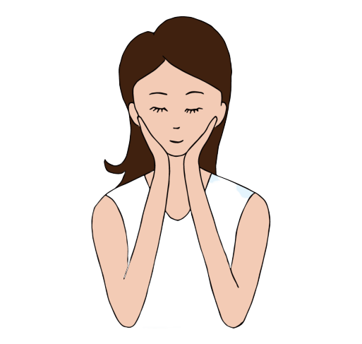
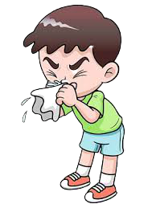

Cuci tangan sesering mungkin.
Cuci tangan secara teratur dan sesering mungkin dengan sabun dan air atau bahan mengandung alkohol akan membunuh virus yang mungkin ada di tangan kamu.
Terapkan social distancing
Jaga jarak minimal 1 meter dengan mereka yang batuk atau bersih. Alasannya, ketika seseorang batuk atau bersin atau bersih, mereka menyemprotkan tetesan cairan kecil dari hidung atau mulut mereka yang mungkin mengandung virus. Jika terlalu dekat, kamu bisa menghirup tetesan air yang mungkin saja mengandung virus COVID-19.

Hindari menyentuh mata, hidung dan mulut
Tangan menyentuh banyak permukaan dan virus mungkin menempel di sana. Setelah terkontaminasi, tangan dapat memindahkan virus ke mata, hidung, atau mulut kamu. Dari sana, virus bisa masuk ke tubuh dan bisa membuat sakit.
